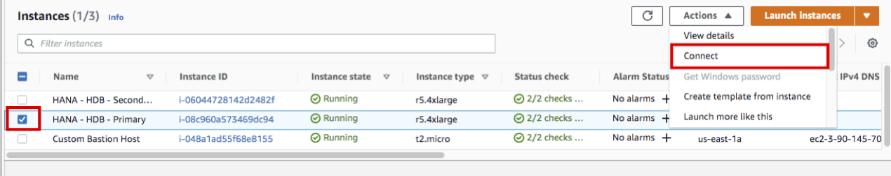

Task 01. Change HANA HSR Config
Task 01에서는 Standby 시스템에서 QAS 시스템 서비스를 위해 HSR 옵션을 변경하고. Global Memory 설정을 변경할 예정입니다.
-
Session Manager를 통해 sechana에 접속합니다.
- AWS Management Console에 로그인 한 뒤 EC2 Instance Console에 접속 합니다.
- HANA-HDB-Secondary 인스턴스를 선택하고, Action을 선택하고, Connect을 선택 합니다.

- Session Manager 를 선택하고, Connect 버튼을 누릅니다.

-
root 유저로 접속 후, Cluster를 Maintenance 모드로 변경하고, HSR 및 Global Memory 설정을 변경합니다
- Cluster를 Maintenance 모드로 변경 합니다.
sudo su - root crm node maintenance prihana crm node maintenance sechana- crm maintenance 상태 확인
crm_mon -rfn1
-
hdbadm 유저로 접속 후, HDB Stop 하고, Secondary 운영 SAP HANA DB (HDB)의 메모리 자원 사용을 줄이고 preload 옵션 false로 설정합니다.
- (sechana) HDB STOP
su - hdbadm HDB stop
- (sechana) global.ini 설정을 변경합니다. VI 편집기로 global.ini 를 오픈 합니다. 그리고 아래 옵션을 추가 합니다.
vi /usr/sap/HDB/SYS/global/hdb/custom/config/global.ini [system_replication] ... preload_column_tables = false #Add-on [memorymanager] global_allocation_limit = 24576 -
Takover 이후에는 해당 설정이 원복 할 수 있도록, SAPHanaSR-Hook 변경 합니다.
- (sechana) root user 접속 후, SAPHanaSR.py 수정하기 전에 스크립트를 백업 합니다.
exit cd /usr/share/SAPHanaSR/ cp -pr SAPHanaSR.py SAPHanaSR.py.default- (sechana) root user 접속 후, SAPHanaSR.py 스크립트를 아래와 같이 2가지를 수정 합니다.
- 수정 1(AS-Is)

- 수정 1(To-Be)
- 수정 2(AS-Is)

- 수정 2(To-Be)

- 스크립트는 아래와 같이 수정하시기 바랍니다.
vi SAPHanaSR.py # 수정 1 from hdb_ha_dr.client import HADRBase, Helper import os, time from hdbcli import dbapi dbuser = "SYSTEM" dbpwd = "Init12345!" dbport = 30013 stmnt1 = "ALTER SYSTEM ALTER CONFIGURATION ('global.ini','SYSTEM') UNSET ('memorymanager','global_allocation_limit') WITH RECONFIGURE" stmnt2 = "ALTER SYSTEM ALTER CONFIGURATION ('global.ini','SYSTEM') UNSET ('system_replication','preload_column_tables') WITH RECONFIGURE" # 수정 2 def postTakeover(self, rc, **kwargs): """Post takeover hook.""" self.tracer.info("%s.postTakeover method called with rc=%s" % (self.__class__.__name__, rc)) if rc == 0: # normal takeover succeeded conn = dbapi.connect('localhost', dbport, dbuser, dbpwd) cursor = conn.cursor() cursor.execute(stmnt1) cursor.execute(stmnt2) return 0 elif rc == 1: # waiting for force takeover conn = dbapi.connect('localhost', dbport, dbuser, dbpwd) cursor = conn.cursor() cursor.execute(stmnt1) cursor.execute(stmnt2) return 0 elif rc == 2: # error, something went wrong return 0 - 수정 1(AS-Is)
-
hdbadm 유저로 접속 후, HDB Start 하고, TAKEOVER TEST 를 수행합니다.
- (sechana)의 Secondary HDB START
su - hdbadm HDB start
- (sechana)에서 HSR 상태를 확인합니다.
hdbnsutil -sr_state
- (sechana)에서 Takeover를 수행합니다
hdbnsutil -sr_takeover- (sechana)에서 SAPHanaSR.py 에 의해 Takeover 후 global.ini 설정이 원복 되었는지 확인 합니다.
cat /usr/sap/HDB/SYS/global/hdb/custom/config/global.ini
- 현재 HA Cluster가 maintenance mode이므로 HA Cluster를 사용한 자동 Takeover-Takeback이 불가능한 상태이므로 SAP HANA SR을 원래 상태로 복원하기 위해 아래와 같은 순서로 수작업으로 재설정한다.
- sechana 연결은 유지하고, Session Manager를 통해 prihana도 접속합니다.
- AWS Management Console에 로그인 한 뒤 EC2 Instance Console에 접속 합니다.
- HANA-HDB-Primary 인스턴스를 선택하고, Action을 선택하고, Connect을 선택 합니다. 
- Session Manager 를 선택하고, Connect 버튼을 누릅니다.
- (prihana)에서 hdbadm 유저로 접속 후, REGISTER as seconadry Database 수행
sudo su - hdbadm HDB stop hdbnsutil -sr_register --remoteHost=sechana --remoteInstance=00 --replicationMode=sync --name=HAP --operationMode=logreplay HDB start
- (prihana)에서 동기화 상태 확태 확인
hdbnsutil -sr_state
- (prihana)에서 takeback
hdbnsutil -sr_takeover- (sechana)에서 hdbadm 유저로 접속 후, REGISTER as seconadry Database 수행
su - hdbadm HDB stop hdbnsutil -sr_register --remoteHost=prihana --remoteInstance=00 --replicationMode=sync --name=HAS --operationMode=logreplay- (sechana)의 global.ini 설정을 변경합니다. VI 편집기로 global.ini 를 오픈 합니다. 그리고 아래 옵션을 추가 합니다.
vi /usr/sap/HDB/SYS/global/hdb/custom/config/global.ini [system_replication] ... preload_column_tables = false #Add-on [memorymanager] global_allocation_limit = 24576- (sechana)에서 HDB START
- (sechana)에서 hdbadm 유저로 접속 후, Secondary HDB START
HDB start